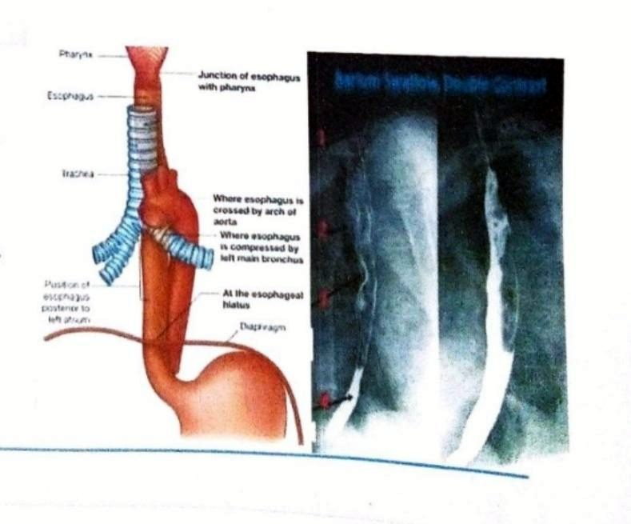
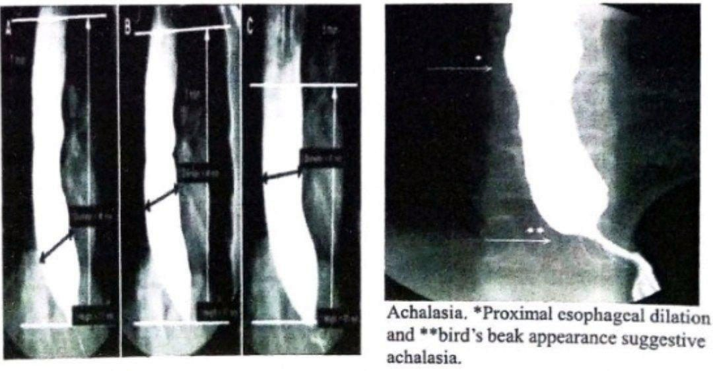
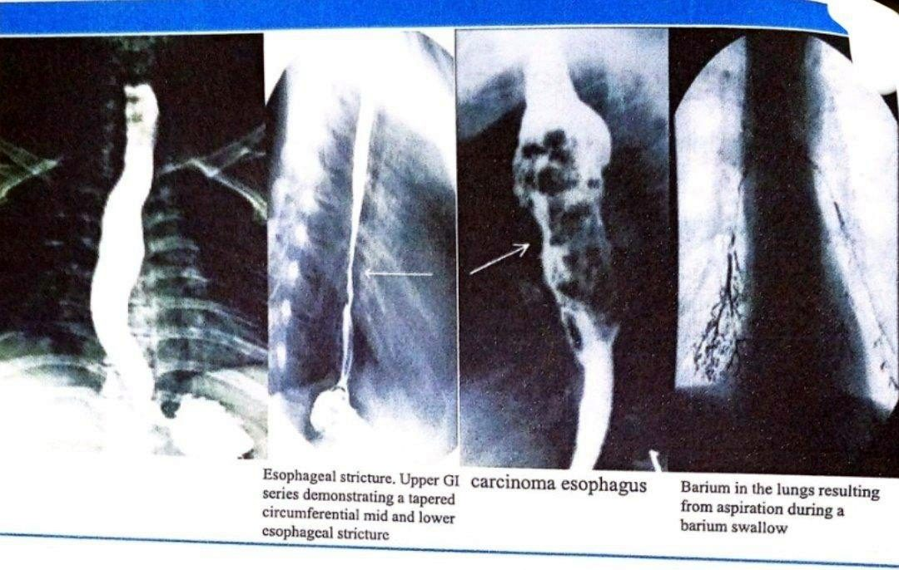
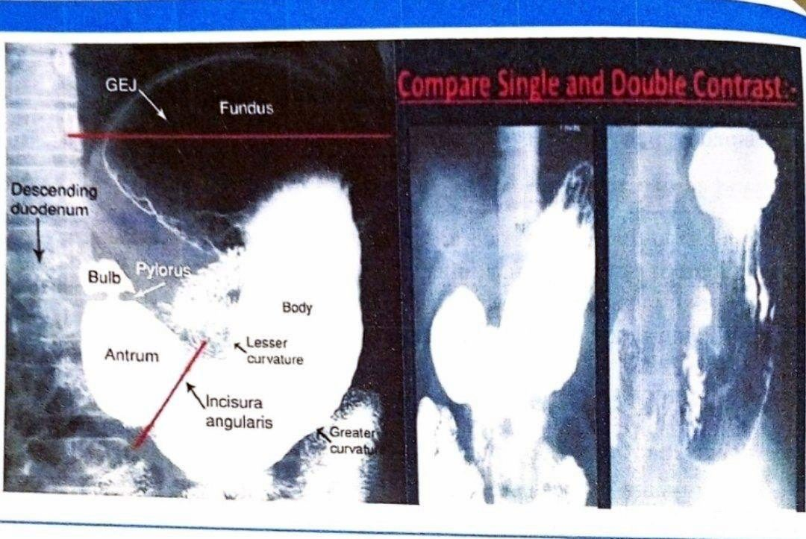
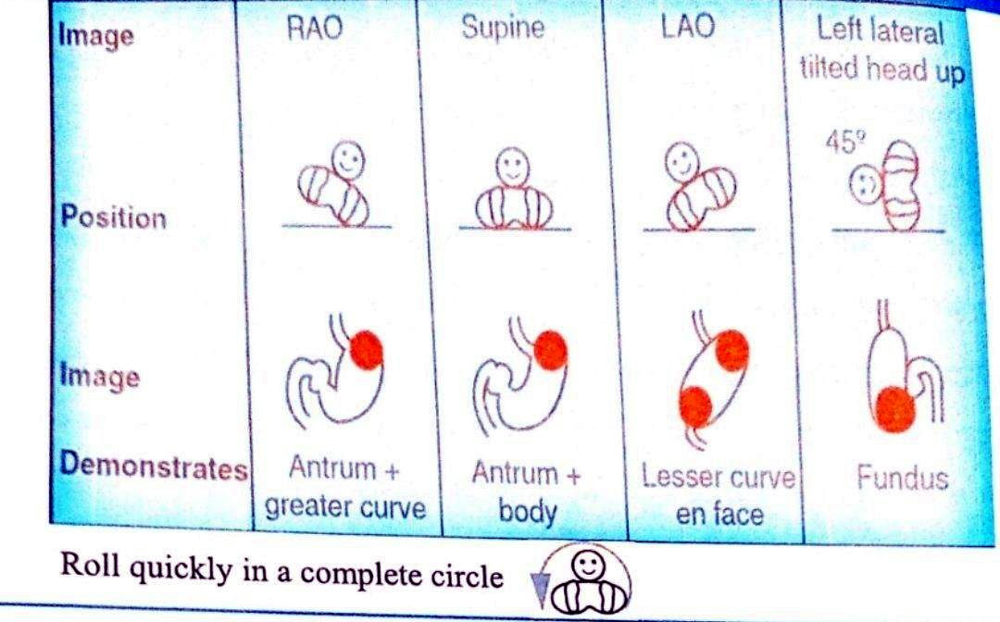
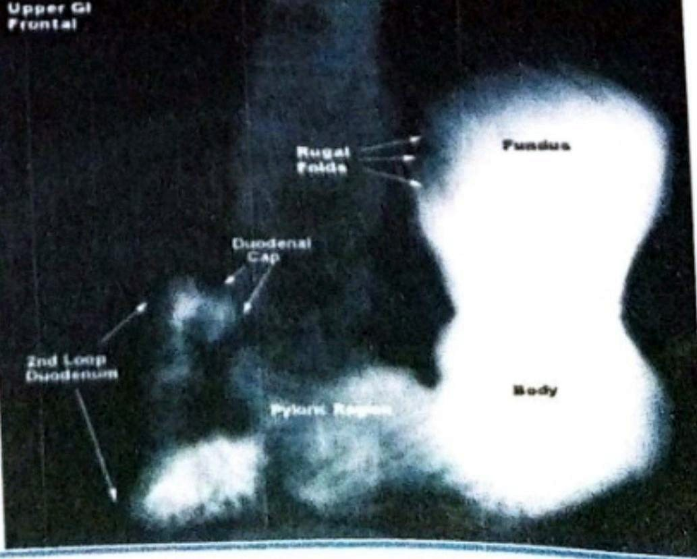
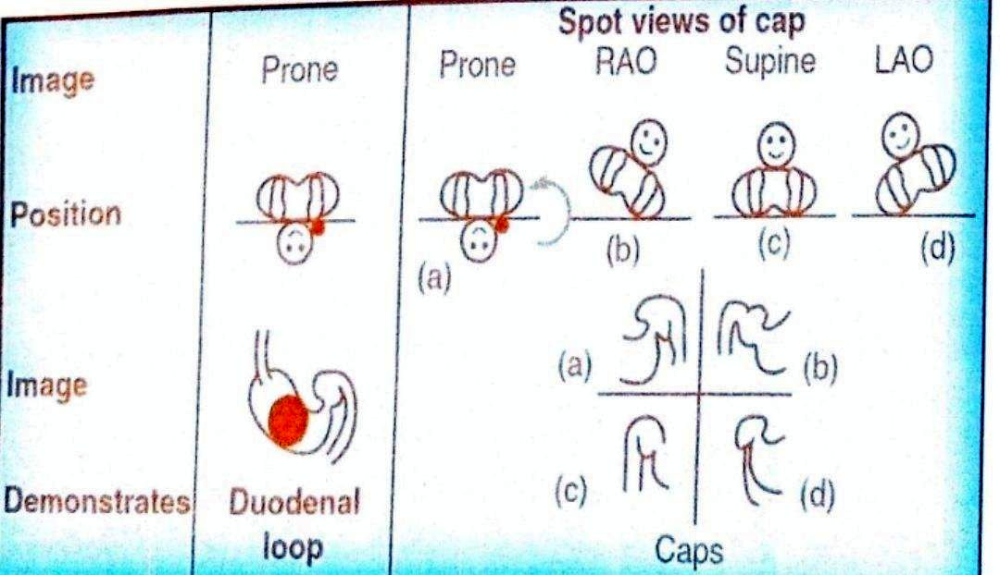
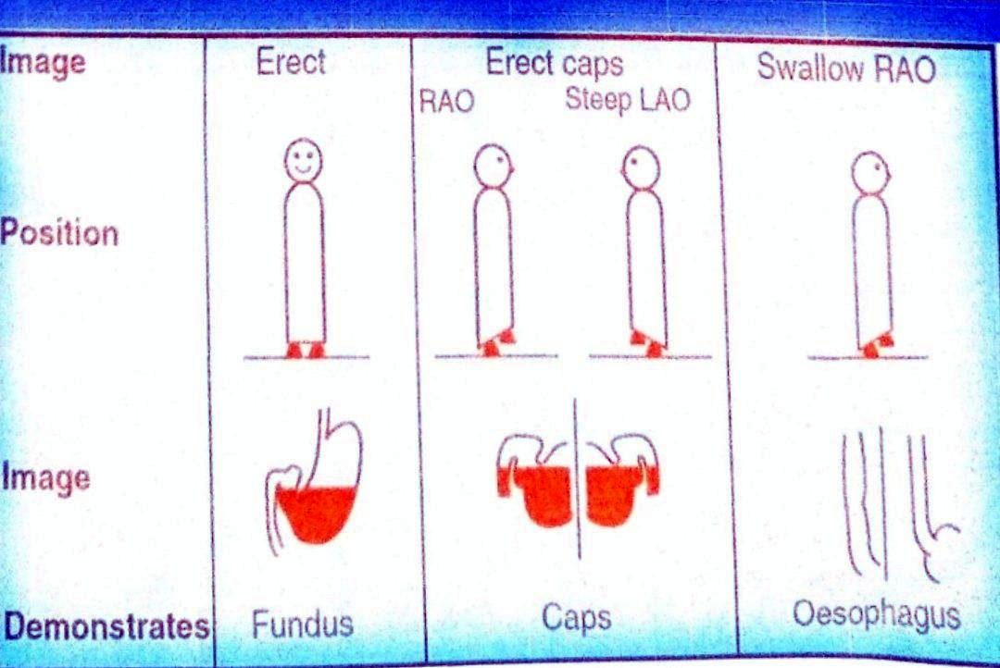
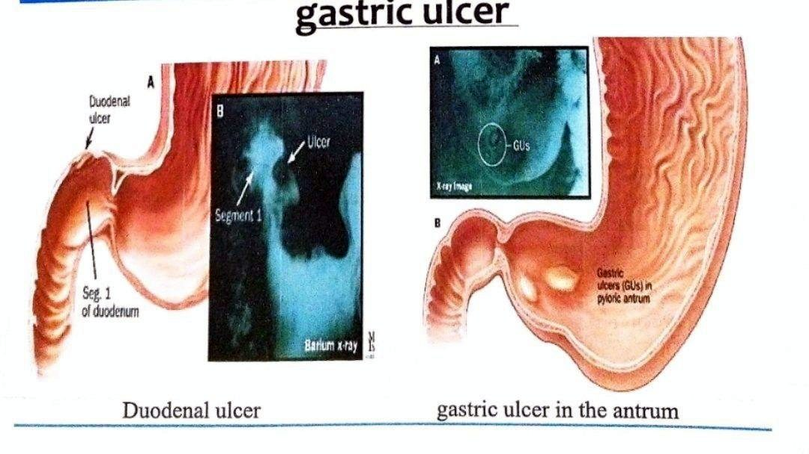
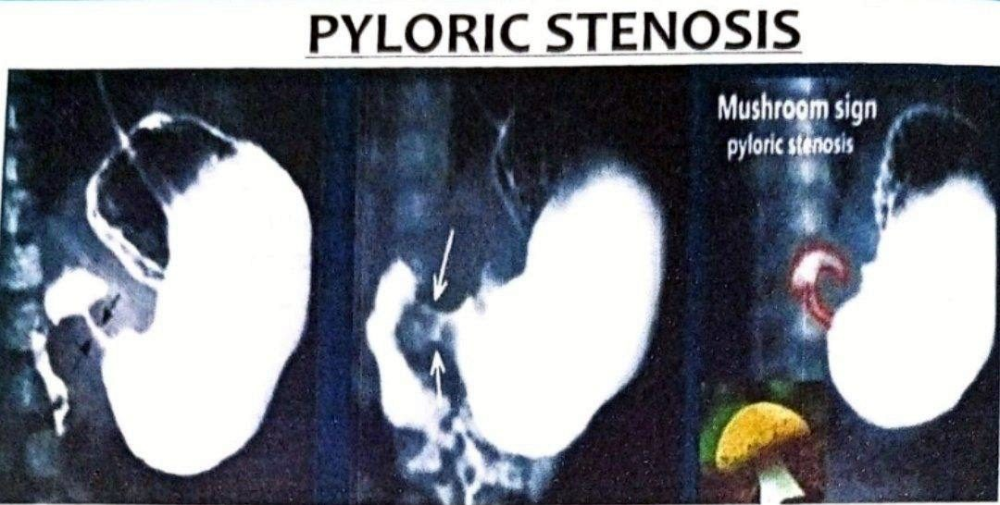

بلع ووجبة التباينLecture 3: Contrast Swallow/ Meal
نظري · م03 · 15.2 دقيقةأقسام المحاضرة (11)
- بلع التباين وتشريح المريءCONTRAST SWALLOW
- الدواعي وأنواع الدراسةIndications
- مادة التباين والتحضيرContrast Medium used
- التقنيةTechnique
- الوضعيات وبلع الباريوم الموقوتRAO POSITION
- التباين المزدوج للمريءDouble-contrast esophagram
- وجبة التباين والتشريحCONTRAST MEAL
- دواعي الوجبة وموانعهاIndications
- الطرق والتباين المزدوجMethods
- الصور الموضعيةSpot exposures
- التباين المفرد والمضاعفاتSINGLE CONTRAST STUDY
بلع التباين وتشريح المريءCONTRAST SWALLOW
مراجعة التشريحAnatomy review:
The esophagus is a muscular tube that is normally 25cm long and 2-3 cm wide.
المريء أنبوب عضلي طوله عادةً 25 سم وعرضه 2–3 سم.
The esophagus is found anterior to the vertebral column and begin from C% level and finishes at lower oesophageal sphincter at T11, following the curvature of the vertebral column. It passes through the esophageal hiatus to end with stomach at the gastro-esophageal sphincter.
يقع المريء أمام العمود الفقري، ويبدأ من مستوى C% وينتهي عند العاصرة المريئية السفلية عند الفقرة T11، متّبعاً انحناء العمود الفقري. ويمرّ عبر الفتحة المريئية في الحجاب الحاجز لينتهي بالمعدة عند العاصرة المعدية المريئية.
ينقسم المريء إلى ثلاثة أجزاءThe esophagus is divided into three segments:
- 1. Cervical segment.الجزء العنقي.
- 2. Thoracic segment.الجزء الصدري.
- 3. Abdominal segment.الجزء البطني.
التضيّقاتCONSTRICTIONS:
- • superiorly: level of Cricoid with cartilage, juncture with pharynx.في الأعلى: عند مستوى الغضروف الحلقي، عند التقاء المريء بالبلعوم.
- • Middle: crossed by aorta esophagus and left main bronchi.في الوسط: حيث يعبره الأبهر والقصبة الرئيسية اليسرى.
- • Inferiorly: diaphragmatic sphincter.في الأسفل: العاصرة عند الحجاب الحاجز.

الدواعي وأنواع الدراسةIndications
الدواعي: الاشتباه بمرض في المريءIndications: Suspected Oesophageal Pathology
- 1. Failed upper GI endoscopy: Dysphagia or painful swallow.فشل التنظير الداخلي للجهاز الهضمي العلوي: عسر البلع أو ألم البلع.
- 2. Motility disorders: like achalasia (Timed barium swallow to monitor achalasia therapies).اضطرابات الحركة: مثل تعذّر الارتخاء (الأكالازيا) (بلع الباريوم الموقوت لمتابعة علاجات تعذّر الارتخاء).
- 3. Assessment of trachea-oesophageal fistulae.تقييم النواسير الرغامية المريئية.
- 4. Reflux Esophagitis.التهاب المريء الارتجاعي.
- 5. Esophageal carcinoma.سرطان المريء.
أنواع دراسة التباينTYPES OF CONTRAST STUDY:
- • Single Contrast study (to detect any gross lesion).دراسة التباين المفرد (للكشف عن أي آفة كبيرة).
- • Double Contrast study (to detect mucosal lesion).دراسة التباين المزدوج (للكشف عن آفات الغشاء المخاطي).
- • Rapid fluoroscopy images, rapid exposures (6 frames s-1) or video recording may be required for assessment of the laryngopharynx and upper oesophagus during deglutition.قد نحتاج صور تنظير شعاعي سريعة، أو تعريضات سريعة (6 لقطات في الثانية)، أو تسجيل فيديو لتقييم البلعوم الحنجري وأعلى المريء أثناء البلع.
مادة التباين والتحضيرContrast Medium used
مادة التباين المستعملةContrast Medium used:
- 1. E-Z HD 200%-250% or Baritop 100% w/v, 100 mL (or more, as required), In form of Suspension or PASTE.E-Z HD بتركيز 200%–250% أو Baritop بتركيز 100% وزن/حجم، 100 مل (أو أكثر حسب الحاجة)، بشكل معلّق أو معجون.
- 2. Water-soluble contrast agent if perforation is suspected (e.g. Conray, Gastrografin)مادة تباين ذائبة في الماء إذا اشتُبه بوجود انثقاب (مثل كونراي وغاستروغرافين).
- • LOCM (approx. 300 mg I mL-1) is safest if there is a risk of aspiration.مادة التباين منخفضة الأسمولية LOCM (نحو 300 ملغم يود/مل) هي الأكثر أماناً إذا كان هناك خطر رشف.
- • Gastrografin should NOT be used for the investigation of a tracheoesophageal fistula or when aspiration is a possibility. Use LOCM instead.لا يُستعمل الغاستروغرافين لفحص الناسور الرغامي المريئي أو عند احتمال الرشف؛ تُستعمل LOCM بدلاً منه.
- • Barium should NOT be used initially if perforation is suspected.لا يُستعمل الباريوم في البداية إذا اشتُبه بوجود انثقاب.
تحضير المريضPatient Preparation:
- • None (but as for barium meal if the stomach is also to be examined).لا يوجد تحضير (لكن يكون مثل تحضير وجبة الباريوم إذا كانت المعدة ستُفحص أيضاً).
- • Nothing by mouth (NPO) for 6 hours prior to exam.لا شيء عن طريق الفم (NPO) لمدة 6 ساعات قبل الفحص.
- • Avoid smoking at the day of exam.تجنّب التدخين في يوم الفحص.
- • Check pregnancy status for female of childbearing age.التأكد من عدم وجود حمل عند المرأة في سن الإنجاب.
- • Procedure should be explained to the patient.يجب شرح الإجراء للمريض.
التقنيةTechnique
التقنيةTechnique:
1. Start with the patient in the erect position, right anterior oblique (RAO) position to project the oesophagus clear of the spine.
1. ابدأ والمريض بالوضع القائم، بوضعية المائل الأمامي الأيمن (RAO) لإظهار المريء بعيداً عن العمود الفقري.
- • Ask the patient to full his mouth with contrast but not swallow it until you tell him to do so.اطلب من المريض أن يملأ فمه بمادة التباين ولا يبلعها حتى تطلب منه ذلك.
- • Take frontal and lateral projections of the neck as shown .خذ إسقاطاً أمامياً وجانبياً للرقبة كما هو موضّح.
- • mouthful of barium is swallowed and this bolus is observed under fluoroscopy to assess the function of the esophagus. Then further mouthfuls swallowing with spot exposure(s) to include the whole esophagus distended with contrast.يُبلع ملء الفم من الباريوم وتُراقب هذه اللقمة تحت التنظير الشعاعي لتقييم وظيفة المريء، ثم يُبلع المزيد مع أخذ صور موضعية تشمل المريء كله متوسّعاً بمادة التباين.
2. Dynamic coned views of the hypopharynx with a frame rate of 34 s-1, in AP and lateral, and views during patient swallowing,
2. لقطات ديناميكية مركّزة للبلعوم السفلي بمعدل لقطات 34 s-1، بالوضعين AP والجانبي، ولقطات أثناء بلع المريض.
3. The patient is placed semiprone a in a left posterior oblique (LPO) position. A distended single-contrast view while drinking identifies hernias, subtle mucosal rings and varices.
3. يوضع المريض شبه منبطح بوضعية المائل الخلفي الأيسر (LPO). ولقطة بالتباين المفرد والمريء متوسّع أثناء الشرب تكشف الفتوق، والحلقات المخاطية الدقيقة، والدوالي.
4. Modifications may be required depending on the clinical indication.
4. قد نحتاج تعديلات حسب الداعي السريري.
- • If dysmotility is suspected, barium should be mixed with bread or marshmallow bolus and observed under fluoroscopy correlating symptoms with the passage of the bolus in the erect position.إذا اشتُبه باضطراب الحركة، يُخلط الباريوم بلقمة خبز أو مارشملو، ويُراقب تحت التنظير الشعاعي مع ربط الأعراض بمرور اللقمة في الوضع القائم.
- • If perforation is suspected, a CT with quadruple strength oral contrast (100 mL Omnipaque 300 made up to 1L with water) is more sensitive and provides improved anatomical location of perforation.إذا اشتُبه بالانثقاب، فإن فحص CT مع مادة تباين فموية بقوة مضاعفة أربع مرات (100 مل أومنيباك 300 تُكمّل إلى 1 لتر بالماء) أكثر حساسية، ويحدّد مكان الانثقاب تشريحياً بصورة أفضل.
- • To demonstrate a tracheo-o esophageal fistula in infants, a pull back' nasogastric tube oesophagogram may be performed if the standard oesophagogram is negative.لإظهار الناسور الرغامي المريئي عند الرضّع، يمكن إجراء تصوير المريء بسحب الأنبوب الأنفي المعدي إلى الخلف إذا كان تصوير المريء الاعتيادي سلبياً.
- • This technique is particularly useful in patients known to aspirate or who are ventilated.هذه التقنية مفيدة خاصةً للمرضى المعروفين بالرشف أو الموضوعين على جهاز التنفس.
- • The patient is positioned prone with the arms up and the table may be tilted slightly head down.يوضع المريض منبطحاً مع رفع الذراعين، وقد تُمال الطاولة قليلاً والرأس إلى الأسفل.
- • A nasogastric tube is introduced into the stomach and then withdrawn to the level of the lower oesophagus under lateral screening guidance.يُدخل أنبوب أنفي معدي إلى المعدة، ثم يُسحب إلى مستوى أسفل المريء بتوجيه التنظير الجانبي.
- • 10 to 20 mL of LOCM is syringed in to distend the oesophagus, which will force the contrast medium through any small fistula which may be present.تُحقن 10–20 مل من LOCM بالمحقنة لتوسيع المريء، فتُدفع مادة التباين عبر أي ناسور صغير موجود.
- • The process is repeated for the upper and mid oesophagus.تُكرّر العملية لأعلى المريء ووسطه.
الوضعيات وبلع الباريوم الموقوتRAO POSITION
وضعية المائل الأمامي الأيمنRAO POSITION:
- 1. Aim is To throw the esophagus clear of the spine.الهدف: إبعاد المريء عن العمود الفقري.
- 2. Patient should be rotated 35-45 degreesيُدار المريض 35–45 درجة.
- 3. Center of beam about 2 inches lateral to mid sagittal plane.مركز الحزمة نحو 2 إنش جانب المستوى السهمي الناصف.
- 4. Bottom of cassette below xiphoid processأسفل الكاسيت تحت الناتئ الرهابي.
الإسقاط الجانبيLateral projection:
- 1. Place patient in lateral position.ضع المريض بالوضعية الجانبية.
- 2. Center of beam midcoronal plane.مركز الحزمة على المستوى الإكليلي الناصف.
- 3. Bottom of cassette below xiphoid process.أسفل الكاسيت تحت الناتئ الرهابي.
- 4. Patient must drink continuously before during exposure.يجب أن يشرب المريض باستمرار قبل التعريض وأثناءه.
الإسقاط الأمامي الخلفي أو الخلفي الأماميAP or PA Projection
- 1. Patient supine or prone or erect.المريض مستلقٍ على ظهره أو منبطح أو قائم.
- 2. Center of beam midsagittal plane.مركز الحزمة على المستوى السهمي الناصف.
- 3. Bottom of cassette should be placed just and below tip of xiphoid.يوضع أسفل الكاسيت عند نهاية الناتئ الرهابي وتحتها.
- 4. Esophagus filled with barium.المريء ممتلئ بالباريوم.
تقييم العاصرة المعدية المريئيةGE-sphincter assessment:
- • While patient is supine turned onto the left side and then onto the back (Trendelenburg position) so that barium pools in the gastric fundus,والمريض مستلقٍ، يُدار على جانبه الأيسر ثم على ظهره (وضعية ترندلنبرغ) حتى يتجمّع الباريوم في قاع المعدة،
- • GE junction is then observed fluoroscopically, looking for elicited gastro- esophageal reflux.ثم يُراقب الوصل المعدي المريئي بالتنظير الشعاعي بحثاً عن ارتجاع معدي مريئي مُستحَث.
بلع الباريوم الموقوتTimed barium esophagogram (TBE)
Timed barium esophagogram (TBE) is a simple and objective method for assessing the esophageal emptying.
بلع الباريوم الموقوت (TBE) طريقة بسيطة وموضوعية لتقييم إفراغ المريء.
- • Interpretation of timed barium esophagogram. Radiographs taken 1, 2 and 5 minute after ingestion of 150 mL barium sulphate suspension by an achalasia patient.تفسير بلع الباريوم الموقوت: صور شعاعية تُؤخذ بعد 1 و2 و5 دقائق من شرب 150 مل من معلّق كبريتات الباريوم لمريض تعذّر الارتخاء.
- • Two horizontal parallel lines are drawn to measure the height of barium column as shown. Width of barium column is indicated by the Achalasia. *Proximal esophagcal dilation transverse black line.يُرسم خطّان أفقيان متوازيان لقياس ارتفاع عمود الباريوم كما هو موضّح، ويُشار إلى عرض عمود الباريوم بالخط الأسود المستعرض. (تعذّر الارتخاء: *توسّع المريء القريب).

التباين المزدوج للمريءDouble-contrast esophagram
تصوير المريء بالتباين المزدوجDouble-contrast esophagram:
- • 2 medicine cups (for effervescent granules and water)كوبان طبّيان (للحبيبات الفوّارة والماء).
- • 3/4 ampule effervescent granules 10 cc waterثلاثة أرباع أمبولة من الحبيبات الفوّارة، و10 سي سي ماء.
- • (100-200 mL) dense barium (200% to 250% w/v)(100–200 مل) باريوم كثيف (200% إلى 250% وزن/حجم).
- • Barium cupكوب الباريوم.
- • So , the esophagus will be distended with air and give better mucosal details.وبذلك يتوسّع المريء بالهواء ويعطي تفاصيل أفضل للغشاء المخاطي.
- • Scout film: Not obtained routinely.الصورة الاستطلاعية: لا تُؤخذ روتينياً.
- • IR or cassette: 14 x 14 inches (35 x 35 cm).مستقبِل الصورة (IR) أو الكاسيت: 14 × 14 إنش (35 × 35 سم).
- • KVp: 90.الفولتية KVp: 90.
الرعاية اللاحقةAftercare:
- • Eat and drink as normal but with extra fluids.يأكل ويشرب بشكل طبيعي مع سوائل إضافية.
المضاعفاتComplications:
- • Leakage of barium from an unsuspected perforation.تسرّب الباريوم من انثقاب غير مشتبه به.
- • Aspiration.الرشف.
خلاصة اللقطاتSummary of views:
- 1. AP and lateral view of the neck (to assess pharynx and cervical part of esophagus).لقطة AP وجانبية للرقبة (لتقييم البلعوم والجزء العنقي من المريء).
- 2. Fluoroscopic video recording (to assess the motility).تسجيل فيديو بالتنظير الشعاعي (لتقييم الحركة).
- 3. RAO position ( to get clear view of esophagus).وضعية RAO (للحصول على رؤية واضحة للمريء).
- 4. Trendelenburg view (to assess GE-sphincter for reflux).لقطة ترندلنبرغ (لتقييم العاصرة المعدية المريئية بحثاً عن الارتجاع).
- 5. Timed barium esophagogram (TBE) is a simple and objective method for assessing the esophageal emptying.بلع الباريوم الموقوت (TBE) طريقة بسيطة وموضوعية لتقييم إفراغ المريء.
- 6. Single and double study done (to assess gross and mucosal lesions ).إجراء الدراسة المفردة والمزدوجة (لتقييم الآفات الكبيرة وآفات الغشاء المخاطي).

الحالة 1Case 1
- • 60years old male Complain from difficult swallowing for the last 5 month. Associated with weight loss.رجل عمره 60 سنة يشكو من صعوبة البلع منذ 5 أشهر، مع نقص في الوزن.
- • Send for barium swallow testأُرسل لإجراء فحص بلع الباريوم.
- • Gastrologistطبيب الجهاز الهضمي.
وجبة التباين والتشريحCONTRAST MEAL
التعريفDefinition
- • It is a type of x-ray fluoroscopy study of gastro esophageal junction, stomach and duodenum abnormalities.نوع من دراسات التنظير الشعاعي بالأشعة السينية لتشوّهات (اضطرابات) الوصل المعدي المريئي والمعدة والاثني عشري.
- • To look for problems in the stomach and duodenum by drinking CONTRAST AGENT, then X-ray series of images are taken.للبحث عن مشكلات في المعدة والاثني عشري بشرب مادة التباين، ثم تُؤخذ سلسلة من الصور الشعاعية.
تشريح المعدةANATOMY OF STOMACH
The stomach is composed of 3 parts :-
تتكوّن المعدة من 3 أجزاء:
- 1. Fundus :- the ballooned portion that lies lateral and superior to the cardiac orifice.القاع: الجزء المنتفخ الذي يقع جانب الفتحة الفؤادية وأعلاها.
- 2. Body :- which has at its lower end area of constriction -angular notch - named (incisura angularis)الجسم: في نهايته السفلى منطقة تضيّق — الثلمة الزاوية — تُسمّى (incisura angularis).
- 3. Pylorus :- The smaller terminal portion of the stomach which divide into:البوّاب: الجزء النهائي الأصغر من المعدة، وينقسم إلى:
- • pyloric antrum (small dilatation distal to incisura).الغار البوّابي (توسّع صغير بعد الثلمة).
- • pyloric canal.القناة البوّابية.
تشريح الاثني عشريANATOMY OF DUODENUM
The duodenum is shaped like the letter "C" and consists of 4 parts :-
يشبه الاثنا عشري حرف "C" ويتكوّن من 4 أجزاء:
- • 1 st part :- named duodenal bulb or cap (common site for ulcers),الجزء الأول: يُسمّى بصلة الاثني عشري أو غطاءه (مكان شائع للقرحة)،
- • 2 nd part :- descending part and the longest part which contain the openings of common bile duct and pancreatic duct,الجزء الثاني: الجزء النازل، وهو الأطول، وفيه فتحتا القناة الصفراوية المشتركة وقناة البنكرياس،
- • 3 rd part the horizontal portion,الجزء الثالث: الجزء الأفقي،
- • 4 th part :- the ascending part that will join the jejununm.الجزء الرابع: الجزء الصاعد الذي يتصل بالصائم.
دواعي الوجبة وموانعهاIndications
الدواعيIndications
- 1. Epigastric pain is suggestive of peptic ulceration.ألم أعلى البطن (الشرسوفي) الذي يوحي بالقرحة الهضمية.
- 2. Failed upper gastrointestinal endoscopy or patient unwilling to undergo endoscopy.فشل التنظير الداخلي للجهاز الهضمي العلوي، أو عدم رغبة المريض في إجراء التنظير.
- 3. Dyspepsia (indigestion ).عسر الهضم.
- 4. Unexplained Weight loss(suspicion of CA).نقص الوزن غير المفسّر (الاشتباه بالسرطان).
- 5. Gastrointestinal hemorrhage.نزف الجهاز الهضمي.
- 6. Partial gastric or duodenal obstruction.انسداد جزئي في المعدة أو الاثني عشري.
موانع الاستعمالCONTRAINDICATIONS
- 1. Complete bowel obstruction.الانسداد المعوي الكامل.
- 2. Suspected perforation.الاشتباه بالانثقاب.
تحضير المريضPatient preparation
- 1. Patient should not eat or drink for at least 6 hours before examination.يجب ألّا يأكل المريض أو يشرب لمدة 6 ساعات على الأقل قبل الفحص.
- 2. As cigarette smoking may interfere with optimum coating of the mucosa, patients should restrain from smoking.لأن تدخين السجائر قد يعيق التغليف الأمثل للغشاء المخاطي، يجب أن يمتنع المريض عن التدخين.
- 3. Assess contraindications to the pharmacological agents used.تقييم موانع استعمال الأدوية المستعملة في الفحص.
مادة التباينCONTRAST MEDIUM
- 1. E-Z HD 250% w/v & Baritop 100% w/v 135 ml.E-Z HD بتركيز 250% وزن/حجم وBaritop بتركيز 100% وزن/حجم، 135 مل.
- 2. Carbex granules (for double contrast technique).حبيبات كاربكس (Carbex) (لتقنية التباين المزدوج).
الطرق والتباين المزدوجMethods
الطرقMethods
- 1. Double contrast. The method of choice to demonstrate mucosal pattern.التباين المزدوج: الطريقة المفضّلة لإظهار نمط الغشاء المخاطي.
- 2. Single contrast. Uses include the following:التباين المفرد: من استعمالاته:
- • Children-since it usually is not necessary to demonstrate mucosal pattern.الأطفال، لأنه لا يلزم عادةً إظهار نمط الغشاء المخاطي.
- • To demonstrate gross pathology only, typically very frail patients unable to swallow gas granules.لإظهار الأمراض الكبيرة فقط، وعادةً للمرضى الضعفاء جداً غير القادرين على بلع حبيبات الغاز.

تقنية التباين المزدوجTECHNIQUE OF DOUBLE CONTRAST
- • A gas-producing agent is swallowed.يُبلع عامل مُنتِج للغاز.
- • (Commercially available powders like gastrovision, eno, fruit salt).(مساحيق متوفرة تجارياً مثل gastrovision وإينو وملح الفاكهة).
- • The patient then drinks the barium while lying on the left side. supported by their elbow.ثم يشرب المريض الباريوم وهو مستلقٍ على جانبه الأيسر، مستنداً على مرفقه.
- • (This position prevents the barium from reaching the duodenum too quickly and so obscuring the greater curve of the stomach).(هذه الوضعية تمنع الباريوم من الوصول إلى الاثني عشري بسرعة كبيرة فيحجب الانحناء الكبير للمعدة).
- • The patient then lies supine, (to bring the barium up against the gastro -esophageal junction).ثم يستلقي المريض على ظهره (لجلب الباريوم إلى الوصل المعدي المريئي).
- • If reflux is observed spot films are taken.إذا لوحظ ارتجاع تُؤخذ صور موضعية.
- • Patient rolled from side to side, to finish in an RAO position, (so barium coats mucosal surfaces by washing mucus from the gastric mucosa).يُقلَّب المريض من جانب إلى آخر لينتهي بوضعية RAO (حتى يغلّف الباريوم سطوح الغشاء المخاطي بغسل المخاط عن الغشاء المخاطي المعدي).
- • An I.V. injection of a smooth muscle relaxant (Buscopan 20 mg ) may be given-relax stomach and suspend peristalsis. ( to better distend the stomach and to slow down the emptying of contrast into duodenum).قد يُعطى حقن وريدي لمرخٍّ للعضلات الملساء (بوسكوبان 20 ملغم) لإرخاء المعدة وإيقاف الحركة الدودية (لتوسيع المعدة بصورة أفضل وإبطاء إفراغ مادة التباين إلى الاثني عشري).
- • kV range double contrast- 70-120 kV.مدى الفولتية في التباين المزدوج: 70–120 kV.
الصور الموضعيةSpot exposures
الصور الموضعية للمعدة (مستلقياً)Spot exposures of the stomach (lying):
- • RAO= to demonstrate the antrum and greater curveRAO: لإظهار الغار والانحناء الكبير.
- • Supine to demonstrate the antrum and body.الاستلقاء على الظهر (Supine): لإظهار الغار والجسم.
- • LAO= to demonstrate the lesser curve.LAO: لإظهار الانحناء الصغير.
- • Left lateral tilted, head up 45 degrees-to demonstrate the fundus.الجانبي الأيسر مائلاً والرأس إلى الأعلى 45 درجة: لإظهار القاع.

الصورة الموضعية لعروة الاثني عشريSpot image of the duodenal C loop:
While Prone - the patient lies on a compression pad to prevent barium from flooding into the duodenum.
والمريض منبطح، يستلقي على وسادة ضغط لمنع الباريوم من الاندفاع إلى الاثني عشري.
- 1. Gastric antrum.الغار المعدي.
- 2. pyloric canal.القناة البوّابية.
- 3. duodenal cap.غطاء الاثني عشري.
- 4. duodenal loop.عروة الاثني عشري.

الصور الموضعية لغطاء الاثني عشري (مستلقياً)Spot images of the duodenal cap (lying):
- • Prone.الانبطاح.
- • RAO - the patient attains this position from the prone position by rolling first onto the left side.RAO: يصل المريض إلى هذه الوضعية من الانبطاح بالتقلّب أولاً على جانبه الأيسر.
- • Supine.الاستلقاء على الظهر.
- • LAO.LAO.
The duodenal cap or duodenal ampulla is the very first part of the duodenum which is slightly dilated. is about 2 cm long.
غطاء الاثني عشري أو أمبولته هو أول جزء من الاثني عشري، وهو متوسّع قليلاً، وطوله نحو 2 سم.

التباين المفرد والمضاعفاتSINGLE CONTRAST STUDY
دراسة التباين المفردSINGLE CONTRAST STUDY
- • In erect position.بالوضع القائم.
- • 100-150 ml of 100% w/v barium suspension is given and patient is made to swallow while esophagus is seen under fluoroscopy.يُعطى 100–150 مل من معلّق الباريوم بتركيز 100% وزن/حجم، ويُطلب من المريض أن يبلع بينما يُرى المريء تحت التنظير الشعاعي.
- • The table is made horizontal, and the patient lying supine is rotated with the right side going up (RAO).تُجعل الطاولة أفقية، ويُدار المريض المستلقي على ظهره بحيث يرتفع جانبه الأيمن (RAO).
- • Spot films of the filled fundus.صور موضعية للقاع الممتلئ.
عيوب دراسة التباين المفردDisadvantages of single contrast study
- • Lack of sensitivity in detecting small erosion/linear ulceration, superficial gastric carcinomas and subtle mucosal abnormalities.ضعف الحساسية في كشف التآكلات الصغيرة والتقرّحات الخطية، وسرطانات المعدة السطحية، واضطرابات الغشاء المخاطي الدقيقة.

الرعاية اللاحقةAfter care
- 1. The patient must not drive until any blurring of vision produced by the Buscopan has resolved. This usually occurs within 30 minutes.يجب ألّا يقود المريض السيارة حتى يزول أي تشوّش في الرؤية سبّبه البوسكوبان، ويحدث ذلك عادةً خلال 30 دقيقة.
- 2. The patient should be warned that their bowel motions will be white for a few days after the examination and may be difficult to flush away.يجب تنبيه المريض إلى أن برازه سيكون أبيض لبضعة أيام بعد الفحص، وقد يصعب تصريفه.
- 3. The patient should be advised to eat and drink normally but with extra fluids to avoid barium impaction.يُنصح المريض بأن يأكل ويشرب بشكل طبيعي مع سوائل إضافية لتجنّب انحشار الباريوم.
المضاعفاتComplications
- 1. Leakage of barium from an unsuspected perforation.تسرّب الباريوم من انثقاب غير مشتبه به.
- 2. Aspiration.الرشف.
- 3. Conversion of a partial large bowel obstruction into a complete obstruction by the impaction of barium.تحوّل الانسداد الجزئي في الأمعاء الغليظة إلى انسداد كامل بسبب انحشار الباريوم.
- 4. Side effects of the pharmacological agents used.الآثار الجانبية للأدوية المستعملة.


الحالة 1Case 1
- • 55years male with history of hypertension Complain from epigastric pain and repeated vomiting for 3 month. He lost 7 KG during this period.رجل عمره 55 سنة لديه تاريخ ارتفاع ضغط الدم، يشكو من ألم أعلى البطن وتقيؤ متكرّر منذ 3 أشهر، وفقد 7 كغم خلال هذه المدة.
- • Send for barium meal testأُرسل لإجراء فحص وجبة الباريوم.
- • Gastroenterologistطبيب الجهاز الهضمي.
المحاضرة مسموعة
نص الأستاذ بالإنكليزي مثل الأصل · 15.2 دقيقة. اضغط أي جملة تسمعها، أو مصطلح منقّط تسمع لفظه ومعناه.
CONTRAST SWALLOWبلع التباين وتشريح المريء
CONTRAST SWALLOW
Contrast Swallow is the non-invasive contrast procedure used in assessing the anatomy, physiology & pathology of upper GI tract including esophagus & GE junction.
Anatomy review:
The esophagus is a muscular tube that is normally 25cm long and 2-3 cm wide.
The esophagus is found anterior to the vertebral column and begin from C% level and finishes at lower oesophageal sphincter at T11, following the curvature of the vertebral column. It passes through the esophageal hiatus to end with stomach at the gastro-esophageal sphincter.
The esophagus is divided into three segments:
Cervical segment.
Thoracic segment.
Abdominal segment.
CONSTRICTIONS:
superiorly: level of Cricoid with cartilage, juncture with pharynx.
Middle: crossed by aorta esophagus and left main bronchi.
Inferiorly: diaphragmatic sphincter.
Indicationsالدواعي وأنواع الدراسة
Indications
Indications: Suspected Oesophageal Pathology
Failed upper GI endoscopy: Dysphagia or painful swallow.
Motility disorders: like achalasia (Timed barium swallow to monitor achalasia therapies).
Assessment of trachea-oesophageal fistulae.
Reflux Esophagitis.
Esophageal carcinoma.
TYPES OF CONTRAST STUDY:
Single Contrast study (to detect any gross lesion).
Double Contrast study (to detect mucosal lesion).
Rapid fluoroscopy images, rapid exposures (6 frames s-1) or video recording may be required for assessment of the laryngopharynx and upper oesophagus during deglutition.
Contrast Medium usedمادة التباين والتحضير
Contrast Medium used
Contrast Medium used:
E-Z HD 200%-250% or Baritop 100% w/v, 100 mL (or more, as required), In form of Suspension or PASTE.
Water-soluble contrast agent if perforation is suspected (e.g. Conray, Gastrografin)
LOCM (approx. 300 mg I mL-1) is safest if there is a risk of aspiration.
Gastrografin should NOT be used for the investigation of a tracheoesophageal fistula or when aspiration is a possibility. Use LOCM instead.
Barium should NOT be used initially if perforation is suspected.
Patient Preparation:
None (but as for barium meal if the stomach is also to be examined).
Nothing by mouth (NPO) for 6 hours prior to exam.
Avoid smoking at the day of exam.
Check pregnancy status for female of childbearing age.
Procedure should be explained to the patient.
Techniqueالتقنية
Technique
Technique:
1. Start with the patient in the erect position, right anterior oblique (RAO) position to project the oesophagus clear of the spine.
Ask the patient to full his mouth with contrast but not swallow it until you tell him to do so.
Take frontal and lateral projections of the neck as shown .
mouthful of barium is swallowed and this bolus is observed under fluoroscopy to assess the function of the esophagus. Then further mouthfuls swallowing with spot exposure(s) to include the whole esophagus distended with contrast.
2. Dynamic coned views of the hypopharynx with a frame rate of 34 s-1, in AP and lateral, and views during patient swallowing,
3. The patient is placed semiprone a in a left posterior oblique (LPO) position. A distended single-contrast view while drinking identifies hernias, subtle mucosal rings and varices.
4. Modifications may be required depending on the clinical indication.
If dysmotility is suspected, barium should be mixed with bread or marshmallow bolus and observed under fluoroscopy correlating symptoms with the passage of the bolus in the erect position.
If perforation is suspected, a CT with quadruple strength oral contrast (100 mL Omnipaque 300 made up to 1L with water) is more sensitive and provides improved anatomical location of perforation.
To demonstrate a tracheo-o esophageal fistula in infants, a pull back' nasogastric tube oesophagogram may be performed if the standard oesophagogram is negative.
This technique is particularly useful in patients known to aspirate or who are ventilated.
The patient is positioned prone with the arms up and the table may be tilted slightly head down.
A nasogastric tube is introduced into the stomach and then withdrawn to the level of the lower oesophagus under lateral screening guidance.
10 to 20 mL of LOCM is syringed in to distend the oesophagus, which will force the contrast medium through any small fistula which may be present.
The process is repeated for the upper and mid oesophagus.
RAO POSITIONالوضعيات وبلع الباريوم الموقوت
RAO POSITION
RAO POSITION:
Aim is To throw the esophagus clear of the spine.
Patient should be rotated 35-45 degrees
Center of beam about 2 inches lateral to mid sagittal plane.
Bottom of cassette below xiphoid process
Lateral projection:
Place patient in lateral position.
Center of beam midcoronal plane.
Bottom of cassette below xiphoid process.
Patient must drink continuously before during exposure.
AP or PA Projection
Patient supine or prone or erect.
Center of beam midsagittal plane.
Bottom of cassette should be placed just and below tip of xiphoid.
Esophagus filled with barium.
GE-sphincter assessment:
While patient is supine turned onto the left side and then onto the back (Trendelenburg position) so that barium pools in the gastric fundus,
GE junction is then observed fluoroscopically, looking for elicited gastro- esophageal reflux.
Timed barium esophagogram (TBE)
Timed barium esophagogram (TBE) is a simple and objective method for assessing the esophageal emptying.
Interpretation of timed barium esophagogram. Radiographs taken 1, 2 and 5 minute after ingestion of 150 mL barium sulphate suspension by an achalasia patient.
Two horizontal parallel lines are drawn to measure the height of barium column as shown. Width of barium column is indicated by the Achalasia. *Proximal esophagcal dilation transverse black line.
Double-contrast esophagramالتباين المزدوج للمريء
Double-contrast esophagram
Double-contrast esophagram:
2 medicine cups (for effervescent granules and water)
3/4 ampule effervescent granules 10 cc water
(100-200 mL) dense barium (200% to 250% w/v)
Barium cup
So , the esophagus will be distended with air and give better mucosal details.
Scout film: Not obtained routinely.
IR or cassette: 14 x 14 inches (35 x 35 cm).
KVp: 90.
Aftercare:
Eat and drink as normal but with extra fluids.
Complications:
Leakage of barium from an unsuspected perforation.
Aspiration.
Summary of views:
AP and lateral view of the neck (to assess pharynx and cervical part of esophagus).
Fluoroscopic video recording (to assess the motility).
RAO position ( to get clear view of esophagus).
Trendelenburg view (to assess GE-sphincter for reflux).
Timed barium esophagogram (TBE) is a simple and objective method for assessing the esophageal emptying.
Single and double study done (to assess gross and mucosal lesions ).
Case 1
60years old male Complain from difficult swallowing for the last 5 month. Associated with weight loss.
Send for barium swallow test
Gastrologist
CONTRAST MEALوجبة التباين والتشريح
CONTRAST MEAL
Definition
It is a type of x-ray fluoroscopy study of gastro esophageal junction, stomach and duodenum abnormalities.
To look for problems in the stomach and duodenum by drinking CONTRAST AGENT, then X-ray series of images are taken.
ANATOMY OF STOMACH
The stomach is composed of 3 parts :-
Fundus :- the ballooned portion that lies lateral and superior to the cardiac orifice.
Body :- which has at its lower end area of constriction -angular notch - named (incisura angularis)
Pylorus :- The smaller terminal portion of the stomach which divide into:
pyloric antrum (small dilatation distal to incisura).
pyloric canal.
ANATOMY OF DUODENUM
The duodenum is shaped like the letter "C" and consists of 4 parts :-
1 st part :- named duodenal bulb or cap (common site for ulcers),
2 nd part :- descending part and the longest part which contain the openings of common bile duct and pancreatic duct,
3 rd part the horizontal portion,
4 th part :- the ascending part that will join the jejununm.
Indicationsدواعي الوجبة وموانعها
Indications
Indications
Epigastric pain is suggestive of peptic ulceration.
Failed upper gastrointestinal endoscopy or patient unwilling to undergo endoscopy.
Dyspepsia (indigestion ).
Unexplained Weight loss(suspicion of CA).
Gastrointestinal hemorrhage.
Partial gastric or duodenal obstruction.
CONTRAINDICATIONS
Complete bowel obstruction.
Suspected perforation.
Patient preparation
Patient should not eat or drink for at least 6 hours before examination.
As cigarette smoking may interfere with optimum coating of the mucosa, patients should restrain from smoking.
Assess contraindications to the pharmacological agents used.
CONTRAST MEDIUM
E-Z HD 250% w/v & Baritop 100% w/v 135 ml.
Carbex granules (for double contrast technique).
Methodsالطرق والتباين المزدوج
Methods
Methods
Double contrast. The method of choice to demonstrate mucosal pattern.
Single contrast. Uses include the following:
Children-since it usually is not necessary to demonstrate mucosal pattern.
To demonstrate gross pathology only, typically very frail patients unable to swallow gas granules.
TECHNIQUE OF DOUBLE CONTRAST
A gas-producing agent is swallowed.
(Commercially available powders like gastrovision, eno, fruit salt).
The patient then drinks the barium while lying on the left side. supported by their elbow.
(This position prevents the barium from reaching the duodenum too quickly and so obscuring the greater curve of the stomach).
The patient then lies supine, (to bring the barium up against the gastro -esophageal junction).
If reflux is observed spot films are taken.
Patient rolled from side to side, to finish in an RAO position, (so barium coats mucosal surfaces by washing mucus from the gastric mucosa).
An I.V. injection of a smooth muscle relaxant (Buscopan 20 mg ) may be given-relax stomach and suspend peristalsis. ( to better distend the stomach and to slow down the emptying of contrast into duodenum).
kV range double contrast- 70-120 kV.
Spot exposuresالصور الموضعية
Spot exposures
Spot exposures of the stomach (lying):
RAO= to demonstrate the antrum and greater curve
Supine to demonstrate the antrum and body.
LAO= to demonstrate the lesser curve.
Left lateral tilted, head up 45 degrees-to demonstrate the fundus.
Spot image of the duodenal C loop:
While Prone - the patient lies on a compression pad to prevent barium from flooding into the duodenum.
Gastric antrum.
pyloric canal.
duodenal cap.
duodenal loop.
Spot images of the duodenal cap (lying):
Prone.
RAO - the patient attains this position from the prone position by rolling first onto the left side.
Supine.
LAO.
The duodenal cap or duodenal ampulla is the very first part of the duodenum which is slightly dilated. is about 2 cm long.
SINGLE CONTRAST STUDYالتباين المفرد والمضاعفات
SINGLE CONTRAST STUDY
SINGLE CONTRAST STUDY
In erect position.
100-150 ml of 100% w/v barium suspension is given and patient is made to swallow while esophagus is seen under fluoroscopy.
The table is made horizontal, and the patient lying supine is rotated with the right side going up (RAO).
Spot films of the filled fundus.
Disadvantages of single contrast study
Lack of sensitivity in detecting small erosion/linear ulceration, superficial gastric carcinomas and subtle mucosal abnormalities.
After care
The patient must not drive until any blurring of vision produced by the Buscopan has resolved. This usually occurs within 30 minutes.
The patient should be warned that their bowel motions will be white for a few days after the examination and may be difficult to flush away.
The patient should be advised to eat and drink normally but with extra fluids to avoid barium impaction.
Complications
Leakage of barium from an unsuspected perforation.
Aspiration.
Conversion of a partial large bowel obstruction into a complete obstruction by the impaction of barium.
Side effects of the pharmacological agents used.
Case 1
55years male with history of hypertension Complain from epigastric pain and repeated vomiting for 3 month. He lost 7 KG during this period.
Send for barium meal test
Gastroenterologist
42 سؤال من نص المحاضرة، ويّا «ليش صح» بعد كل جواب.
ابدأ الاختباراضغط أي مصطلح منقّط تسمع لفظه ومعناه.
PDF ثنائي اللغة: نص الأستاذ + الترجمة + الخلاصة + الأسئلة · 1.8 MB
تحميل الملف